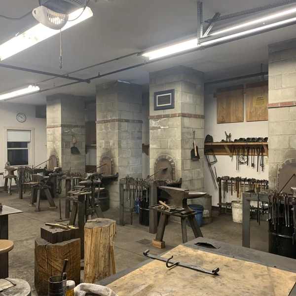
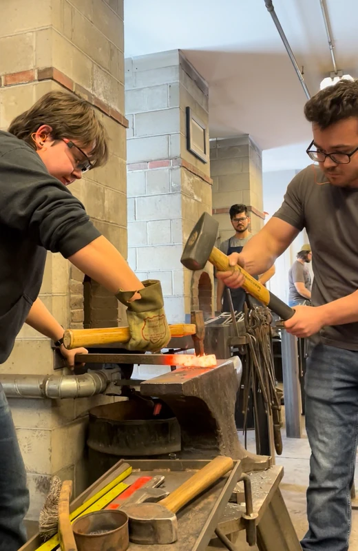
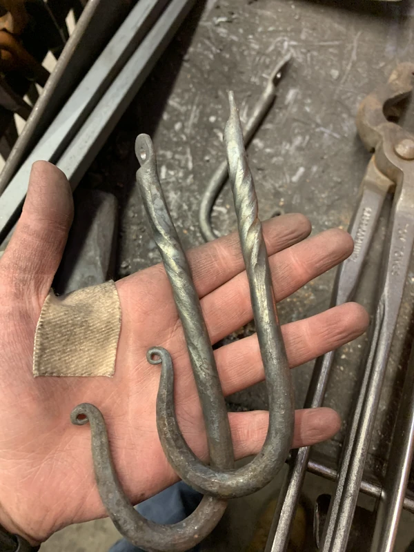
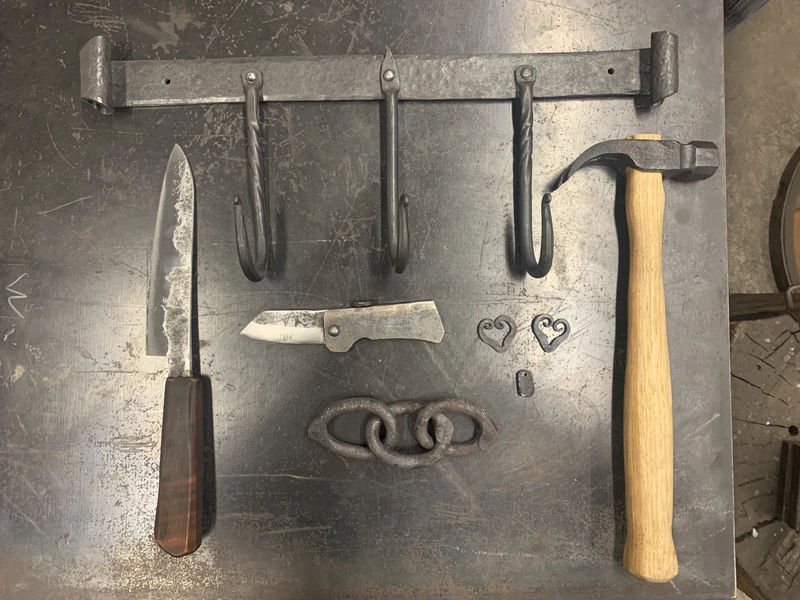
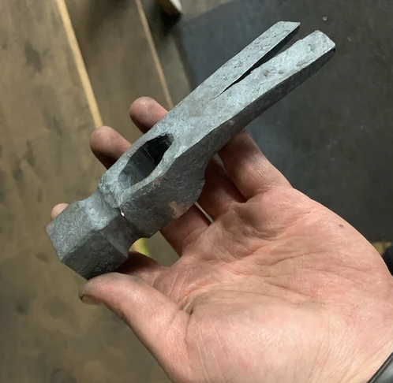
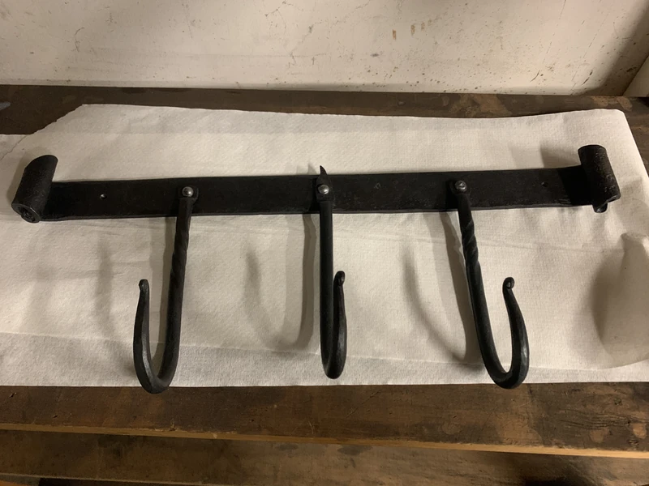
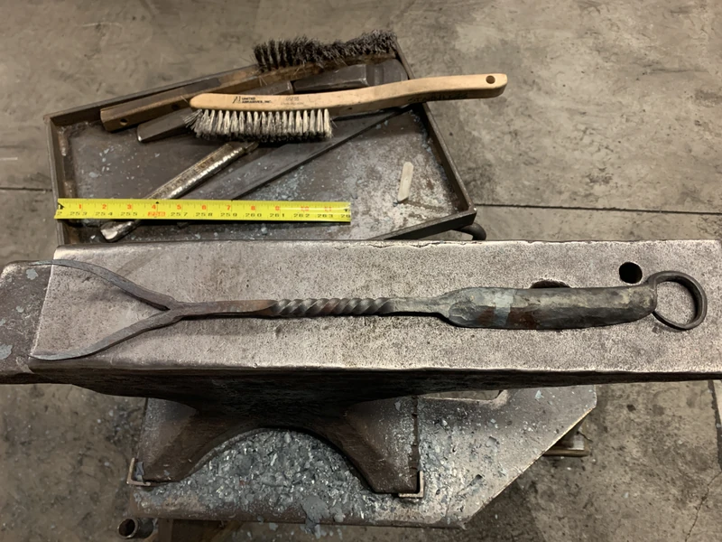
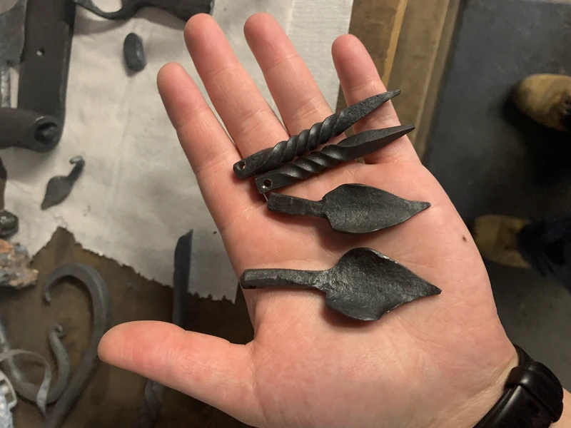
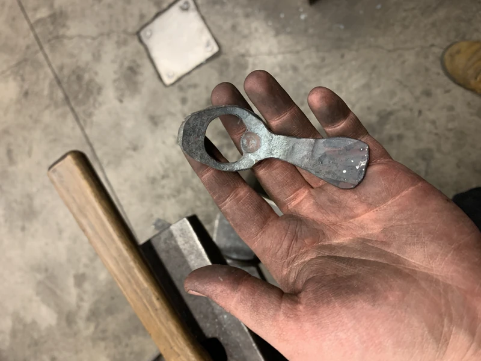
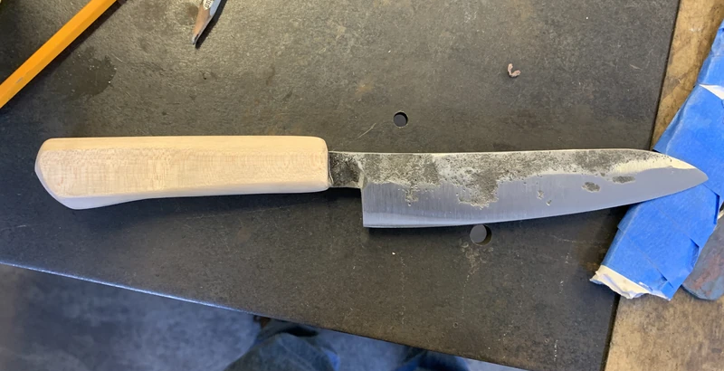

When it comes to art, I like working with a variety of mediums but my favorite of all time has to be metal. I was beyond lucky to spend a full month learning the art of blacksmithing from the master craftsman Steve Murdock and certified Master Bladesmith Nick Rossi.








